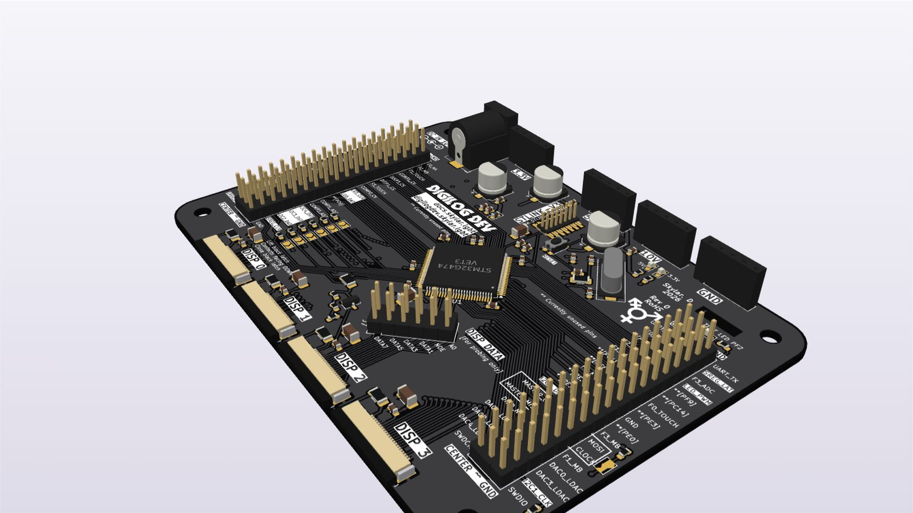
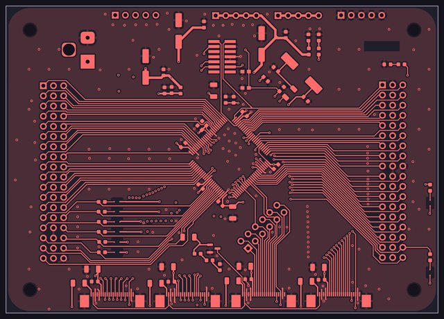
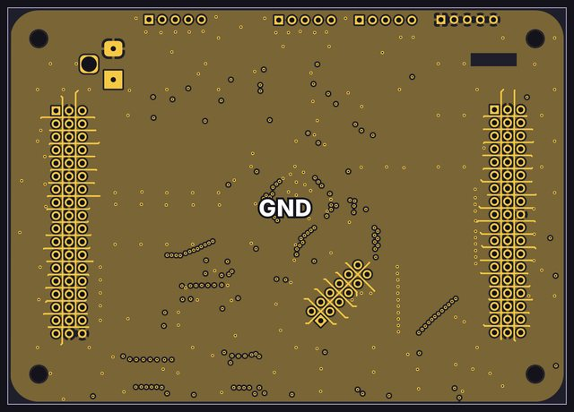
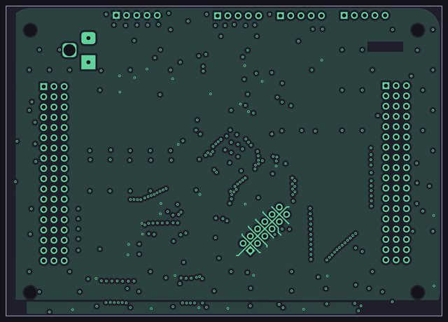
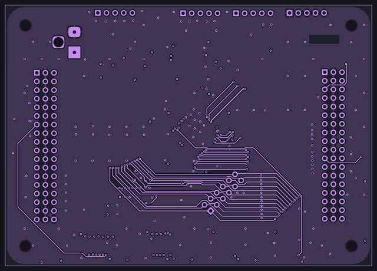
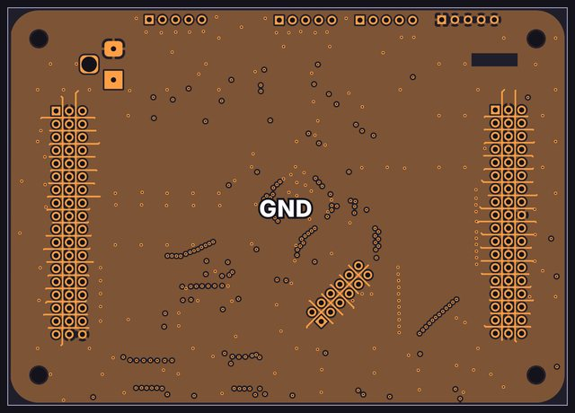
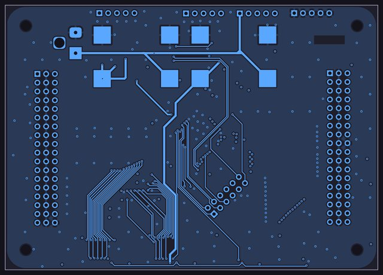
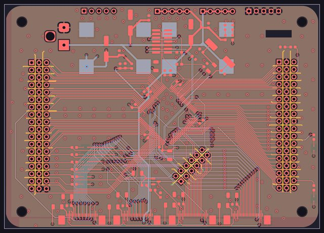

Digital system dev board

Design notes
- STM32G474VET (LQFP-100): 170 MHz, 512 KB flash and 128 KB RAM, running FreeRTOS with statically allocated tasks.
- Laid out like a dev board for prototyping: almost every pin is broken out to a labeled header, with a block of spare pins for rewiring.
- Ground pins sit beside the signals everywhere, to keep the loops of high-speed signals small.
- Four ST7789 240 × 240 screens share one 8-bit parallel bus driven by the FMC, each with its own chip select. One PWM line dims all four backlights, and a header lets you probe the display data lines.
- Four I2C buses, one per channel, for the expanders and DACs; SPI with DMA for the LED chain; and a 921,600-baud UART to the PC remote app.
- The compressor loop runs on the MCU itself: an ADC reads the four level detectors, and the internal DACs and op-amps set the gain.
- An ADC reads the fader wipers, and two timers drive the fader motors with PWM.
- Two DFRobot DFR0570 power modules ride on the back.
The copper layers
All 6 copper layers of the board, top to bottom, drawn from the KiCad layout: 3 signal layers, 2 ground planes (GND) and a +3.3 V power plane.
-

Top F.Cu
Signal layer: parts, signal traces and +3.3 V, +5 V power traces
-

Inner 1 In1.Cu
Ground plane (GND)
-

Inner 2 In2.Cu
Power plane: +3.3 V, with a small +5 V area
-

Inner 3 In3.Cu
Signal layer: signal traces
-

Inner 4 In4.Cu
Ground plane (GND)
-

Bottom B.Cu
Signal layer: signal traces and +3.3 V, +5 V power traces
-

All layers
Every copper layer stacked, top on top